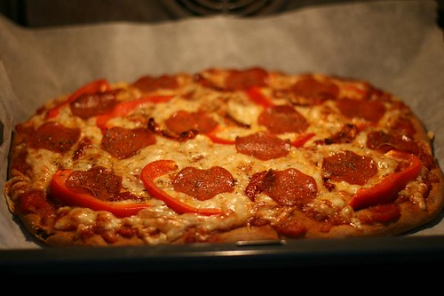
Oppskrift på sunn pizza med tykk bunn! Nam!!!
Dette er min andre pizzaoppskrift her på diggmat.com. Guess what. Det kommer flere. Pizza er som sagt min livrett, og noe jeg rett og slett ikke får nok av.
I dag kjører vi en oldschool 80-talls-pizza med tomatsaus, med noen modifikasjoner, selvsagt.
Her er oppskriften:
**DEIG: (nok til to store pizzaer)
**
1/2 pakke fersk gjær
5 dl lunkent vann
850 gram hvetemel/ eller fullkornshvetemel (sunnere)
2 ts salt
4 ss olivenolje
1 ss honning
PIZZASAUS:(nok til to store pizzaer)
6 sjalottløk (ca 150 gram)
3-5 hvitløksfedd
6 ss olivenolje
2 ss tomatpuré
1 ss sukker (ikke toppet)
1,5 ts salt (evt litt til, her må du smake til)
1 boks hermetiske tomater
1/2 ts pepper
Evt litt basilikum og/eller timian og/eller oregano til å drysse over pizzaen før den går i ovnen
Sausen må krediteres �?yvind Hjelle
PIZZAFYLL: (her kan du egentlig lesse på hva du vil!)
1 pakke Pepperoni
1 stor Paprika
300-400 gram gulost (bruk hva du vil, gjerne også litt blåskimmelost, hvis du har)
3 champignon
Soltørket tomat
Skinke
Oliven
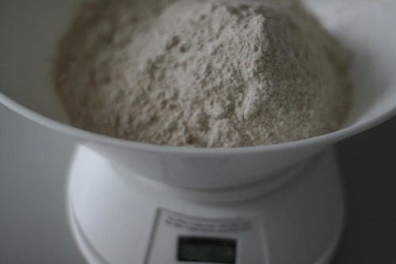
Mål opp 850 gram hvetemel . Jeg bruker fullkornshvete, for det er vesentlig sunnere!
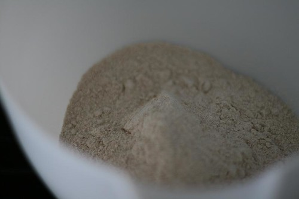
Hell oppi en bolle (jeg bruker kjøkkenmaskin til å elte deigen, men det går heeelt fint uten).
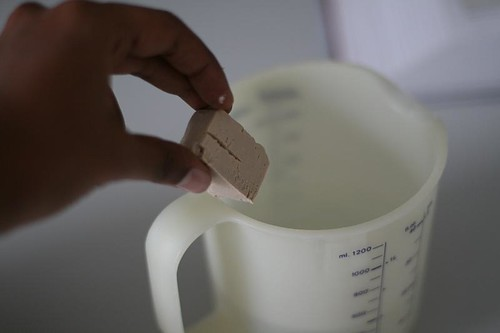
Fyll opp et desilitermål med 5 dl lunkent vann, og putt oppi en halv pakke fersk gjær.
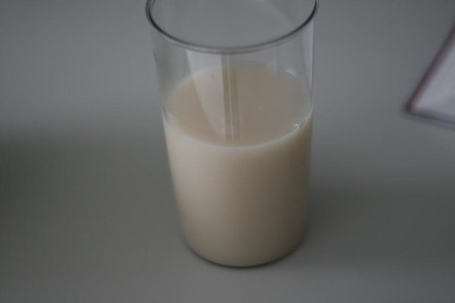
Bruk hånda og skivs gjæret til det går i oppløsning i vannet. Ingen klumper, altså. Og bland med melet.
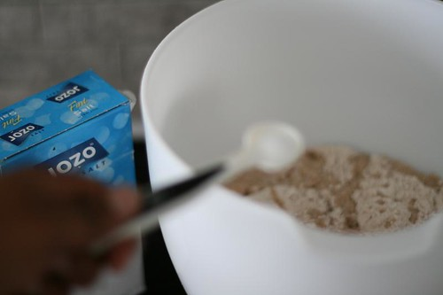
Tilsett to ts salt til mel- og gjærmassen.
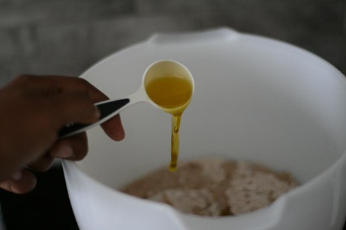
Tilsett 4 ss olivenolje.
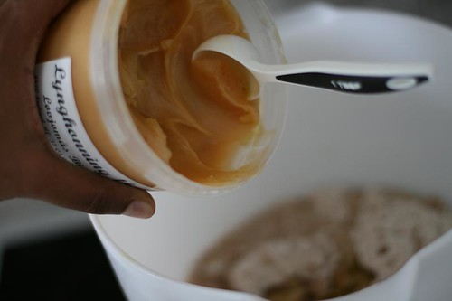
Og så 1 ss honning.
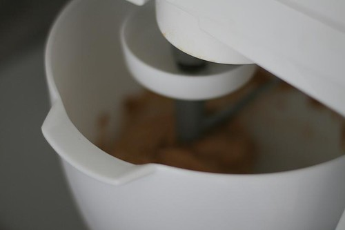
Kjør i kjøkkenmaskinen (elt i ca 5-7 minutter på lav hastighet helt til en fuktig deig formes.) Hvis du elter for hånd, så bruk opptil 10 minutter til en fin deig formes.
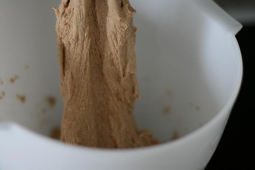
Slik skal deigen se ut når den er klar. Fuktig og fin!
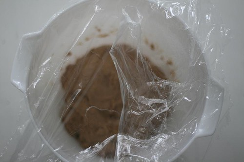
Dekk til med plast og la den hvile på et lunt sted i 30-60 min. Eller enda bedre, legg den i kjøleskapet over natta, da vil mer smak utvikles i deigen.
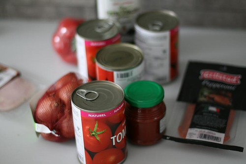
Finn frem ingrediensene til pizzasausen.
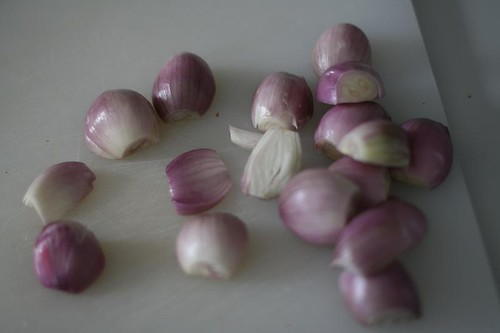
Skrell 6-7 sjalottløk. Avhengig av størrelsen. Finhakk!
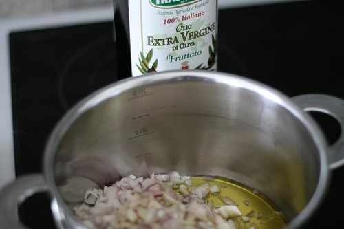
Tilsett løken i en kjele med masse olivenolje (6 ss). Den vil bade i olivenolje når den steker. Deilig. 2-3 minutter
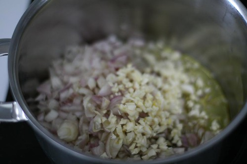
Tilsett 3-5 hvitløksfedd. Jeg er glad i hvitløk, så jeg har tilsatt 6, men begynn på 3 og jobb deg oppover. Stek 1-2 minutter. Pass på å ikke svi hvitløken. Da blir den bitter.
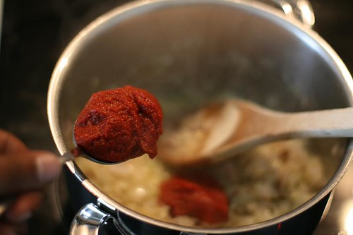
To ss tomatpuré + 1 boks hakkede hermetiserte tomater.
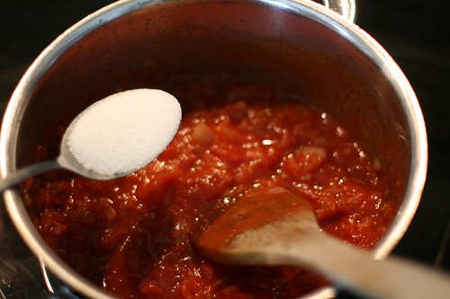
Nå har du fått en ganske fin saus. Tilsett 1 ss sukker og rør videre.
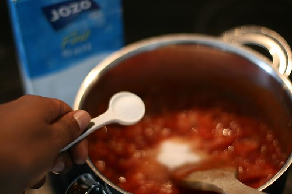
Så litt salt 1,5 ts salt (evt 2, her må du smake deg frem). For mye salt er alltid en dårlig deal.
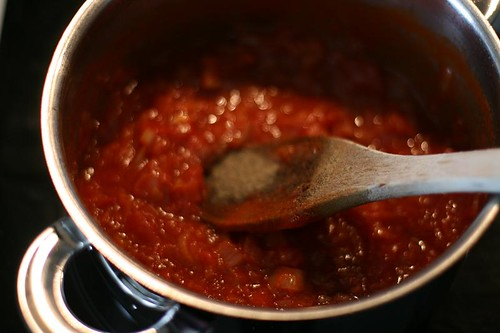
Så kan du, hvis du vil, tilsette en halv ts pepper. Rør inn og la sausen småputre i 3-5 min. SAUSEN ER FERDIG!
SETT OVNEN P�? 215-220 grader!
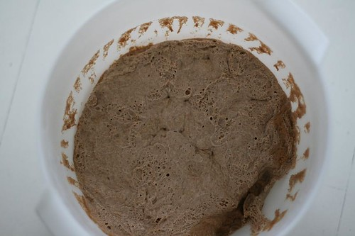
Denne deigen har vært i kjøleskapet i to døgn. Den ble tilgjengjeld veldig god. Men det går fint å la den heve i 30-60 minutter på et lunt sted.
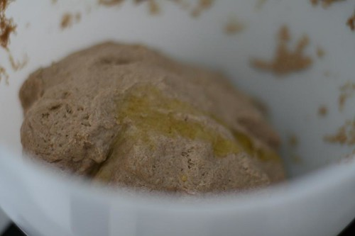
deigen er ganske fuktig, og jeg hater å kjevle. Hvordan løser man dette? Jo, tilsett en skvett olivenolje, da blir den så glatt at den ikke vil klistre seg fast. OBS: DEL DEIGEN I TO.
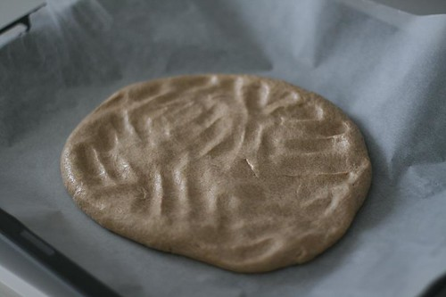
Her er en halv deig lagt på et stekebrett med bakepapir under. Bruk fingrene og press deigen utover. Dette kan ta litt tid, men er mye bedre enn å kjevle.
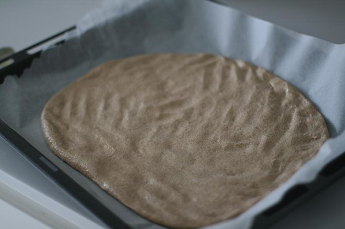
Se her… enda større…
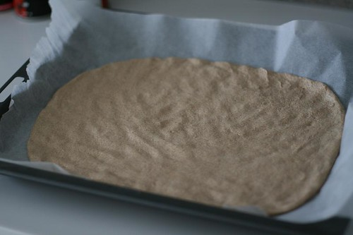
Og her er den ganske ferdig. Ikke prøv å få den helt uti kantene (pizzaen blir litt mindre enn et helt stekebrett).
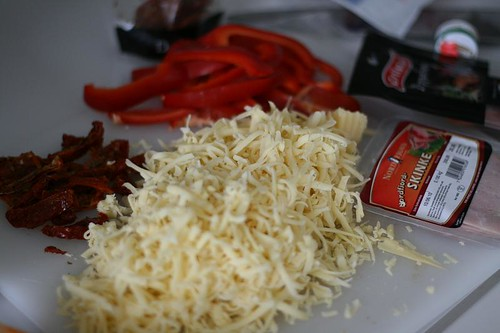
Riv opp ost, kutt paprika, skinke, pepperoni, soltørket tomat… eller hva det nå enn er du vil ha på pizzaen. ALT ER MULIG!
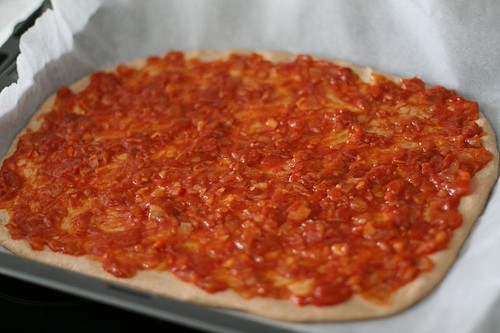
Spre halvparten av sausen utover pizzaen i et jevnt og fint lag.
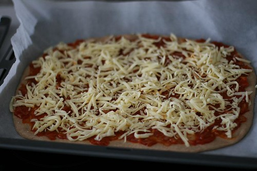
Så på med osten. Osten skal ikke til slutt, altså! Men først!
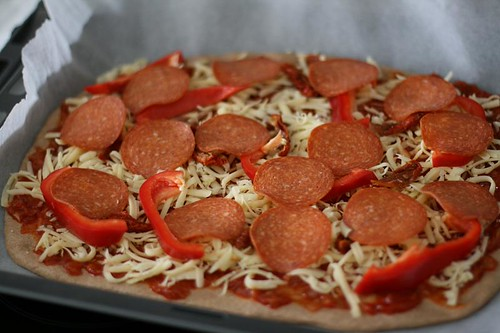
Så litt pepperoni, paprika og soltørket tomat. Avslutt gjerne med et dryss basilikum, oregano, eller timian.
Ovnen er nå forvarmet til ca 220 grader.
Sett inn pizzaen i ovnen, og sjekk etter 20 minutter, deretter sjekker du hvert 3. minutt til den er klar (tar omtrent 25 minutter). Den er klar når bunnen er gjennomstekt og osten er gyllen!
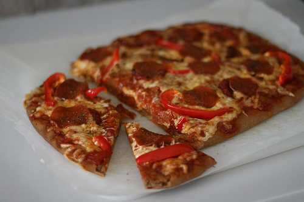
Et stykke pizza, kjære? Ikke spis med en gang, la den den hvile i 5 minutter.
Bon appetit!
Hvis du har lyst til å få tilsendt en mail neste gang jeg legger ut en oppskrift (som er ganske sjelden), så kan du gjøre som ca 500 før deg og legge igjen epostadressen i feltet under.
Legg gjerne igjen en kommentar i feltet under med tips til hva man kan ha på pizzaen, ris eller ros!
Ha en fabelaktig pizzakveld!